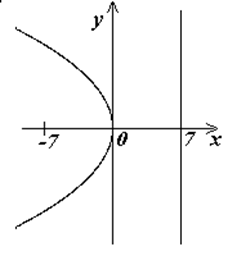

П 8.№5.
Составьте уравнение параболы, если известны ее фокус и уравнение директрисы .
РЕШЕНИЕ:
Из уравнения директрисы имеем или .
Таким образом, уравнение искомой параболы имеет вид
.

Ответ:
 ...
...